Moduł PrestaShop · wersja 1.6.0
Amazon Marketplace Pro
Podręcznik użytkownika: co robi moduł, jak działa każdy ekran i jak sprawić, by pracował bez Twojego udziału.
Amazon Marketplace Pro łączy sklep PrestaShop z Amazon przez oficjalne Selling Partner API, dzięki czemu prowadzisz sprzedaż w Amazon z panelu administracyjnego, którego już używasz. Moduł obejmuje cały cykl sprzedaży:
Moduł działa w całości w Twojej instalacji PrestaShop i łączy się z Amazon bezpośrednio z Twojego serwera. Dane produktów, zamówień i kupujących są przechowywane wyłącznie w Twojej własnej bazie danych.
IntelliPresta utrzymuje jedną małą usługę pod adresem intellipresta.com. Robi ona dwie rzeczy i nic poza tym:
| PrestaShop | Od 1.6 do 9. Interfejs dopasowuje się do wyglądu panelu administracyjnego w wersjach 1.6, 1.7–9 oraz „Basic Edition”. Multisklep jest obsługiwany: każdy sklep łączy się z własnym kontem Amazon (sekcja 11.5). |
| Konto Amazon | Aktywny plan sprzedaży Profesjonalny na dowolnym z 23 obsługiwanych marketplace'ów (Europa, Ameryka Północna, Brazylia, Bliski Wschód, Afryka, Japonia, Australia, Singapur, Indie). |
| Hosting | PHP z cURL. Zalecany jest crontab; jeśli Twój hosting go nie ma, zastąpi go harmonogram IntelliPresta. Opcjonalne odczytywanie odpowiedzi kupujących wymaga rozszerzenia PHP IMAP. |
| Katalog | Każdy produkt i każda kombinacja potrzebuje referencji (SKU) i kodu kreskowego (EAN lub UPC). Narzędzie Kontrola katalogu (sekcja 11.3) znajduje te, którym ich brakuje. |
Potem zwykła kolejność pracy wygląda tak: sprawdź referencje w katalogu (11.3), utwórz profil oferty dla każdej rodziny produktów (5.4), uruchom dwuetapową synchronizację w Katalog > Produkty (5.1) i pozwól zaplanowanym zadaniom utrzymywać wszystko w aktualnym stanie.
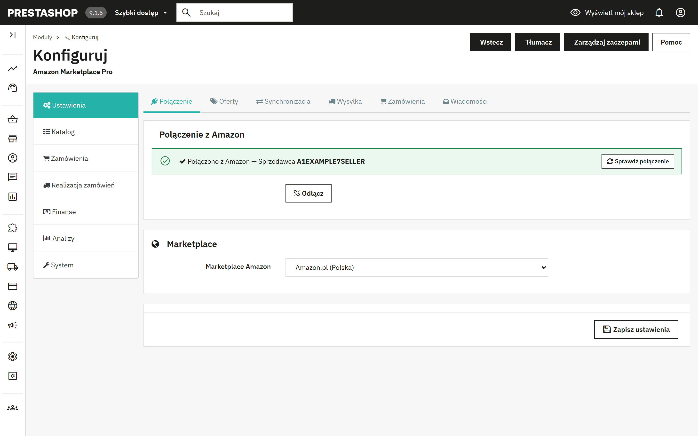
Strona konfiguracji ma pasek boczny z siedmioma grupami. Każda grupa ma u góry zakładki, a każda zakładka zawiera jeden lub więcej paneli. Po przeładowaniu strony lub zapisie moduł wraca do ostatnio otwartej grupy.
| Grupa | Zakładki | Do czego służy |
|---|---|---|
| Ustawienia | Połączenie, Oferty, Synchronizacja, Wysyłka, Zamówienia, Wiadomości | Wszystko, co konfigurujesz raz. Jeden przycisk Zapisz ustawienia zapisuje wszystkie sześć zakładek naraz. |
| Katalog | Produkty, Profile, Narzuty i reguły, Reguły produktów, Kolejka, Osierocone | Wystawianie produktów w Amazon i utrzymywanie zgodności obu katalogów. |
| Zamówienia | Zamówienia, Zamówienia oczekujące, Zwroty | Pobieranie zamówień z Amazon, obsługa braków magazynowych, zwrotów i wiadomości od kupujących. |
| Realizacja zamówień | FBA, Wiele kont | Towar realizowany przez Amazon, realizacja wielokanałowa, dodatkowe marketplace'y. |
| Finanse | Repricing, Opłaty, Promocje | Konkurencyjne ceny, opłaty Amazon, promocje. |
| Analizy | Raporty | Zamawianie i pobieranie raportów Amazon. |
| System | Automatyzacja, Narzędzia, Dzienniki | Harmonogram, narzędzia katalogu, usuwanie ofert, zawartość feedów, dziennik aktywności. |
Grupa Ustawienia to jeden formularz. Zmień cokolwiek na dowolnej z jej sześciu zakładek, a następnie kliknij Zapisz ustawienia na dole.
Pokazuje, czy sklep jest połączony i z którym sprzedawcą. Połącz z Amazon rozpoczyna proces zatwierdzania w Seller Central; Odłącz usuwa zapisaną autoryzację. Wybierz marketplace przed połączeniem, ponieważ od niego zależy strona zgody.
Zielony baner oznacza tylko, że połączenie jest zapisane. Przycisk Sprawdź połączenie w banerze pokazuje, czy nadal działa: łączy się z Amazon, odczytuje Twoje ostatnie zamówienia i prostymi słowami informuje, że wszystko działa, albo podpowiada, co zrobić. Uruchom go po połączeniu lub zawsze, gdy synchronizacja zgłosi błąd autoryzacji. Możliwe wyniki wymienia sekcja 13.
Marketplace Amazon. Witryna Amazon, na której sprzedaje ten sklep. Dodatkowe marketplace'y dodajesz w Realizacja zamówień > Wiele kont (sekcja 8).
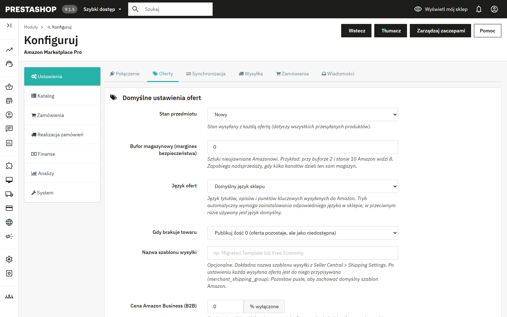
| Stan przedmiotu | Stan wysyłany z każdą ofertą: Nowy, cztery stopnie „Używany” lub Odnowiony. Pojedynczy produkt może go zmienić w swojej zakładce Amazon (sekcja 6). |
| Bufor magazynowy | Sztuki nieujawniane Amazonowi. Przy buforze 2 i stanie 10 Amazon widzi 8. Zapobiega nadsprzedaży, gdy kilka kanałów dzieli ten sam magazyn. |
| Język ofert | Język tytułów, opisów i punktów kluczowych. „Automatycznie” dobiera język do marketplace'u (Niemcy dostają niemiecki, Francja francuski) i wymaga zainstalowania tego języka w sklepie; w przeciwnym razie używany jest domyślny język sklepu. |
| Gdy brakuje towaru | Publikuj ilość 0 (oferta pozostaje, ale jako niedostępna) albo usuń ofertę z Amazon. |
| Nazwa szablonu wysyłki | Opcjonalne. Dokładna nazwa szablonu wysyłki z Seller Central; każda oferta zostaje do niego przypisana. Zakresy według ceny lub wagi ustawiasz w zakładce Wysyłka (4.4). |
| Cena Amazon Business (B2B) | Opcjonalny procent rabatu od Twojej standardowej ceny, wysyłany jako cena biznesowa dla kupujących Amazon Business. Wartość 0 wyłącza tę opcję. |
| Rabaty ilościowe B2B z grupy | Grupa klientów PrestaShop, której ceny specjalne z minimalną ilością większą niż 1 stają się progami ilościowymi Amazon Business (maksymalnie pięć). |
| Źródło SKU | Które pole PrestaShop staje się SKU w Amazon: referencja, EAN lub referencja dostawcy. Produkty z pustym polem źródłowym nie są eksportowane. |
| Prefiks SKU | Dodawany przed SKU i oddzielony myślnikiem: prefiks AMZ daje AMZ-REF123. |
| Zakres cen, Ilość min. | Eksportuj tylko produkty, których cena końcowa mieści się w zakresie, a stan wynosi co najmniej podane minimum. Wartość 0 wyłącza dane ograniczenie. |
| Używaj cen specjalnych | Stosuj ceny specjalne PrestaShop, opcjonalnie tylko jednej grupy klientów, przed narzutem. |
| E-mail do raportów | Zaplanowane uruchomienia wysyłają na ten adres krótki raport. Puste pole oznacza brak raportów. |
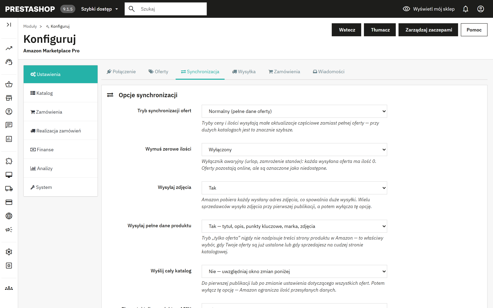
| Tryb synchronizacji ofert | Tryb Normalny wysyła pełne dane oferty. „Tylko cena” i „Tylko ilość” wysyłają małe aktualizacje częściowe, znacznie szybsze przy dużych katalogach. |
| Wymuś zerowe ilości | Wyłącznik awaryjny na urlop lub zamrożenie stanów. Oferty pozostają online, ale są oznaczone jako niedostępne. |
| Wysyłaj zdjęcia | Amazon pobiera każdy wysłany adres zdjęcia, co spowalnia duże wysyłki. Wielu sprzedawców wysyła zdjęcia przy pierwszej publikacji, a potem wyłącza tę opcję. |
| Wysyłaj pełne dane produktu | Tak: wysyłane są tytuł, opis, punkty kluczowe, marka i zdjęcia. Nie: wysyłana jest tylko oferta (cena i stan), co nigdy nie nadpisuje treści oferty. Wybierz Nie, gdy Twoje oferty są już ustalone lub gdy sprzedajesz na cudzej stronie katalogowej. |
| Wyślij cały katalog | Pomija okno zmian przy pierwszej publikacji lub po zmianie ustawienia, które dotyczy wszystkich ofert. Potem wyłącz tę opcję. |
| Eksportuj tylko produkty z ASIN | Ogranicza wysyłki do produktów już dopasowanych do strony w Amazon. |
| Ogranicz eksport do N wierszy | Ogranicza każdą paczkę wysyłki do 100–1500 wierszy. |
| Traktuj pole EAN-13 w PrestaShop jako | Wybierz UPC, jeśli w polu EAN przechowujesz 12-cyfrowe kody amerykańskie. |
| Eksportuj tylko produkty zmienione w ciągu ostatnich | Okno zmian: od 1 do 24 godzin. Zdecydowanie zalecane przy dużych katalogach. Produkty objęte zmianami reguł są uwzględniane dzięki Kolejce (5.6). |
| Usuwaj wpisy kolejki po | Okres przechowywania wysłanych wpisów kolejki: 1, 7 lub 15 dni. |
| Zaokrąglanie cen | Do najbliższego grosza, „Inteligentne” w górę do ,99 albo do liczby całkowitej. Stosowane po narzutach do każdej eksportowanej ceny. |
| Wysyłaj ceny promocyjne | Cena specjalna z datą początku i końca staje się promocją w Amazon w tym samym okresie, więc promocje można wysłać z wyprzedzeniem. |
| Wysyłaj cenę katalogową | Wysyła cenę sprzed rabatu jako przekreśloną cenę katalogową, jeśli jest wyższa od ceny eksportowanej. |
| Przedsprzedaż | Produkty z przyszłą datą dostępności są wystawiane z tą datą uzupełnienia zapasów. |
| Mapowanie stanów | Przypisuje trzy stany PrestaShop do bogatszej listy stanów Amazon. |
| Format tytułu oferty | Nazwa produktu bez zmian albo „Marka - Nazwa produktu - Atrybuty” zgodnie z wytycznymi Amazon. Marka jest pomijana, gdy nazwa już się od niej zaczyna. |
| Uwagi o stanie | Dowolny tekst wysyłany ze stanami Używany i Odnowiony. |
Trzy przełączniki sprawiają, że moduł reaguje na zdarzenia w PrestaShop, zamiast czekać na następne zaplanowane uruchomienie: wysyła cenę i stan przy zapisie produktu, potwierdza wysyłkę z numerem śledzenia, gdy zamówienie zostanie oznaczone jako Wysłane, oraz anuluje zamówienie w Amazon, gdy zamówienie z Amazon zostanie anulowane w PrestaShop.
Szablony wysyłki wg zakresu ceny lub wagi. Przypisuj różne szablony wysyłki z Seller Central w zależności od ceny lub wagi produktu. Dodaj zakresy z minimum (włącznie), maksimum (bez tej wartości; 0 oznacza brak górnej granicy) i nazwą szablonu. Gdy opcja jest wyłączona lub żaden zakres nie pasuje, używany jest pojedynczy szablon z Domyślnych ustawień ofert.
Mapowanie przewoźników. Który kod przewoźnika Amazon zgłaszać przy potwierdzaniu wysyłki dla każdego przewoźnika PrestaShop. Nieprzypisani przewoźnicy są rozpoznawani po nazwie.
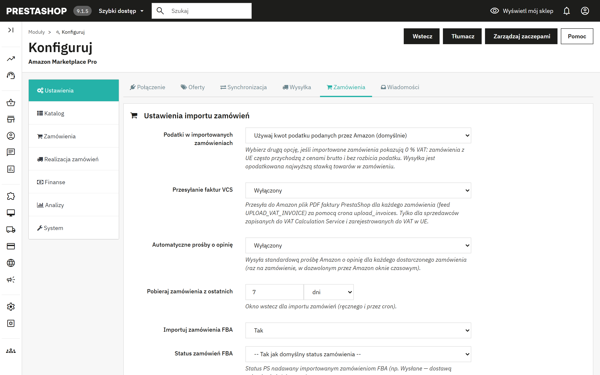
| Podatki w importowanych zamówieniach | Używaj kwot podatku podanych przez Amazon albo stosuj reguły podatkowe PrestaShop, traktując ceny Amazon jako brutto. Wybierz drugą opcję, jeśli importowane zamówienia z UE pokazują 0 % VAT. |
| Przesyłanie faktur VCS | Przesyła do Amazon plik PDF faktury PrestaShop dla każdego zamówienia. Tylko dla sprzedawców zapisanych do VAT Calculation Service Amazon. Działa przez zadanie Przesyłanie faktur. |
| Automatyczne prośby o opinię | Wysyła standardową prośbę Amazon o opinię raz dla każdego dostarczonego zamówienia, w dozwolonym przez Amazon oknie czasowym, przez zadanie Prośby o opinię. |
| Pobieraj zamówienia z ostatnich | Okno wstecz dla importu ręcznego i zaplanowanego, w dniach lub godzinach. |
| Importuj zamówienia FBA, Status zamówień FBA, Status zamówień wysłanych | Czy importować zamówienia realizowane przez Amazon i jaki status PrestaShop otrzymują one oraz zamówienia już wysłane. |
| Dopasowuj pozycje zamówienia według | Referencji lub własnego SKU produktu (zalecane) albo identyfikatorów PrestaShop, jeśli Twoje SKU w Amazon powstały z identyfikatorów produktu i kombinacji. |
| Preferuj ASIN przy dopasowywaniu produktów | Dopasowuje po ASIN przed SKU, korzystając z mapowania tworzonego przez synchronizacje i funkcję „Dopasuj ASIN po EAN”. |
| Używaj zanonimizowanego adresu e-mail dla klientów | Adresy przekierowujące Amazon wygasają; adres syntetyczny zapobiega odbijaniu się wiadomości ze sklepu. Kontakt z kupującym przez Amazon nadal działa. |
| Usuwanie danych kupującego, Usuwaj dane kupującego po | Zobacz sekcję 12. |
| Grupa klientów dla kupujących z Amazon | Grupa nadawana klientom tworzonym podczas importu. |
| Zdalny koszyk, Zwalniaj rezerwację po | Rezerwuje towar dla zakupów w Amazon, które nie są jeszcze płatne, i zwraca go po okresie karencji, jeśli zamówienie nigdy nie stanie się płatne. Zobacz 7.3. |
| Zamówienia bez wystarczającego stanu | Mimo to utwórz zamówienie PrestaShop albo odłóż je do Zamówień oczekujących do weryfikacji. |
| Domyślny przewoźnik, Domyślny status zamówienia | Używane dla importowanych zamówień, gdy nie ma zastosowania nic bardziej szczegółowego. |
Amazon podaje szybkość dostawy obiecaną kupującemu; przypisz każdą szybkość do przewoźnika PrestaShop. Zaawansowane reguły statusów nadają wybranym zamówieniom własny status, na przykład zamówieniom Prime status, którego magazyn nie przeoczy, albo zamówieniom FBA od razu status Wysłane. Reguły są sprawdzane od góry do dołu i wygrywa pierwsze dopasowanie. Faktura e-mailem wysyła plik PDF faktury PrestaShop wraz z opcjonalnym załącznikiem, np. regulaminem, gdy zamówienie osiągnie wybrany status.
Amazon nie udostępnia API do odczytu odpowiedzi kupujących; trafiają one e-mailem na Twój adres sprzedawcy. Wskaż modułowi tę skrzynkę (host IMAP, port, użytkownik, hasło, folder, SSL), a każdą wiadomość powołującą się na zamówienie Amazon zapisze w Obsłudze klienta PrestaShop, przy właściwym zamówieniu. Użyj dedykowanej skrzynki lub hasła aplikacji z dostępem wyłącznie do odczytu. Pobierz teraz odpowiedzi kupujących odczytuje nieprzeczytane wiadomości; zadanie Pobieranie wiadomości kupujących robi to automatycznie w regularnych odstępach.
W zakładce Produkty przenosisz produkty między dwoma katalogami. Oba kierunki działają tak samo: najpierw synchronizacja odczytuje i porównuje dane, pokazując tabelę według SKU; potem drugi krok zapisuje zmiany. Do czasu drugiego kroku nic nie jest zmieniane.
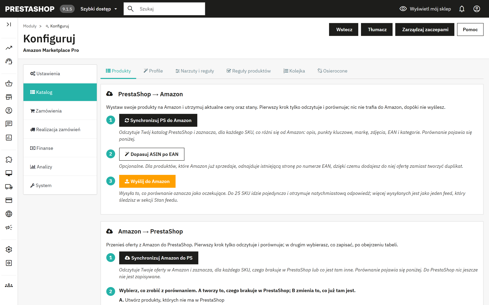
Stan feedu. Wysyłka powyżej 25 SKU trafia do Amazon jako jeden feed. Sprawdź stan feedu pyta Amazon, czy przetwarzanie się zakończyło, i pokazuje dla każdego feedu liczbę pozycji przyjętych, błędów i ostrzeżeń. Dokładny JSON każdego feedu jest przechowywany i można go pobrać w System > Narzędzia.
Mapowanie kategorii. Starszy, prostszy sposób wskazania Amazon, jakiego typu jest produkt: jeden typ produktu Amazon i opcjonalny browse node dla każdej kategorii PrestaShop oraz opcjonalne dodatkowe atrybuty w formacie JSON. Produkty z przypisanej kategorii wysyłają pełne dane oferty; produkty z nieprzypisanej kategorii wysyłają tylko ofertę. Profile ofert (5.4) wykonują to samo zadanie przy użyciu formularza atrybutów pochodzącego z Amazon i mają pierwszeństwo; mapowanie kategorii pozostaje rozwiązaniem zapasowym dla kategorii bez profilu.
Lista produktów Amazon. Widok tylko do odczytu, pokazujący, co Amazon zwraca dla Twojego konta.
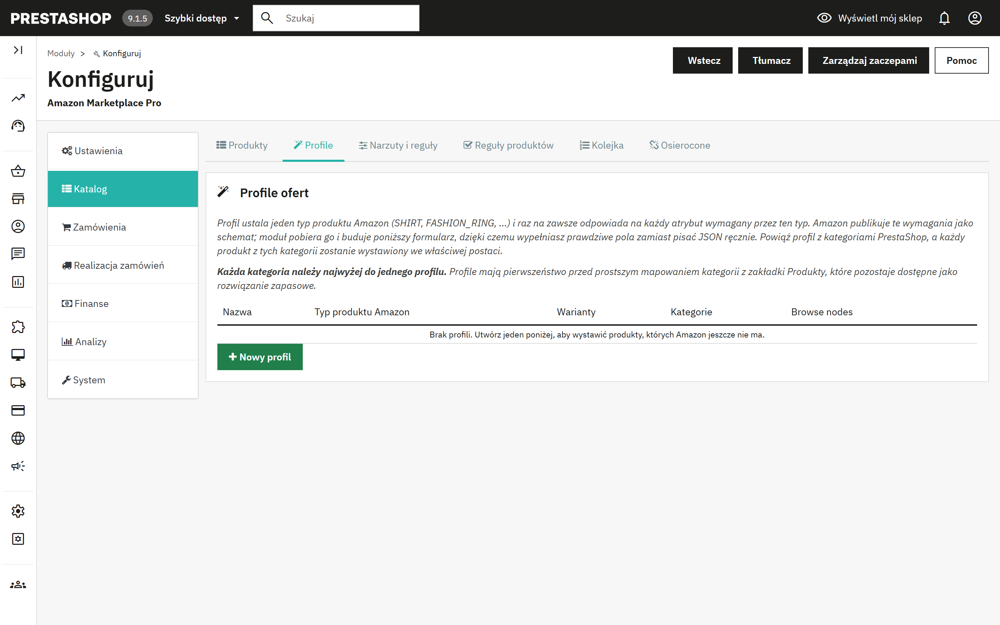
Profil ustala jeden typ produktu Amazon (SHIRT, FASHION_RING itd.) i jednorazowo odpowiada na każdy atrybut wymagany przez ten typ. Amazon publikuje te wymagania jako schemat; moduł pobiera go i buduje formularz, dzięki czemu wypełniasz prawdziwe pola zamiast pisać JSON. Powiąż profil z kategoriami PrestaShop, a każdy produkt z tych kategorii zostanie wystawiony we właściwej postaci. Każda kategoria należy najwyżej do jednego profilu.
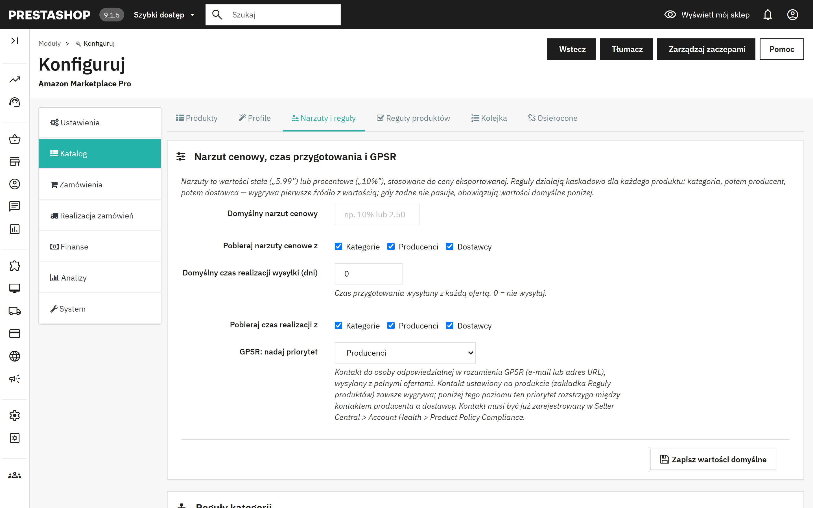
Narzuty to wartości stałe („5.99”) lub procentowe („10%”), stosowane do ceny eksportowanej. Reguły działają kaskadowo dla każdego produktu: kategoria, potem producent, potem dostawca; wygrywa pierwsze źródło z wartością, a gdy żadne nie pasuje, obowiązują wartości domyślne. Ta sama kaskada ustala czas przygotowania i kontakt GPSR.
Tabele Reguły kategorii, Reguły producentów i Reguły dostawców zawierają dla każdej pozycji narzut cenowy, czas realizacji wysyłki, e-mail lub link GPSR oraz przełącznik synchronizacji tak/nie. Tabela producentów zawiera też kraj pochodzenia. Zapis dodaje objęte zmianą produkty do kolejki, aby następna synchronizacja różnicowa wysłała je ponownie.
Reguły produktów pozwalają wyłączyć pojedyncze produkty z synchronizacji z Amazon lub nadać produktowi własny kontakt GPSR, który ma pierwszeństwo przed kontaktami producenta i dostawcy. To samo, a nawet więcej, znajdziesz w zakładce Amazon każdego produktu (sekcja 6).
Kolejka zawiera produkty zmienione w PrestaShop lub objęte zmianą reguł. Gdy okno zmian jest włączone, aktywne wpisy trafiają do następnej synchronizacji, nawet jeśli sam produkt nie był ostatnio zmieniany. Wysłane wpisy stają się nieaktywne i są usuwane po skonfigurowanym okresie przechowywania. Panel oferuje akcje: włącz wszystko, wyłącz wszystko, usuń wygasłe wpisy i usuń wszystko.
Osierocone to oferty w Amazon, którym nie odpowiada już żaden sprzedawalny produkt PrestaShop, ponieważ produkt został usunięty, wyłączony albo zmieniono jego SKU. Najpierw kliknij Synchronizuj Amazon do PS, aby lista odzwierciedlała rzeczywisty asortyment, a potem popraw produkty lub usuń oferty narzędziem z sekcji 11.3.
Każda karta produktu w PrestaShop otrzymuje zakładkę Amazon Marketplace Pro. Jej ustawienia dotyczą tylko tego produktu i mają pierwszeństwo przed profilem oferty, regułami kategorii, producenta i dostawcy oraz ustawieniami globalnymi. Pozostaw pole puste, aby odziedziczyć wartość.
| Synchronizuj ten produkt z Amazon | Tak albo wyklucz produkt z każdego eksportu. |
| Wysyłaj cenę / wysyłaj ilość | Odznacz jedno z pól, aby pozostawić daną wartość nietkniętą w Amazon, na przykład gdy zmieniasz ceny bezpośrednio w Amazon. |
| Wymuszanie stanu | Wysyłaj rzeczywistą ilość, zawsze dostępny (999) albo zawsze niedostępny (0). |
| Cena zastępcza | Wysyłana zamiast ceny sklepowej; narzuty i reguły cenowe są pomijane. |
| Własne SKU | Dla produktu, który istnieje już w Twoim asortymencie Amazon pod innym SKU sprzedawcy. Służy do aktualizacji oferty i dopasowywania zamówień. |
| ASIN | Przypisuje ofertę do znanej strony w Amazon, zamiast zdawać się na dopasowanie po kodzie kreskowym. |
| Realizowane przez Amazon | Czy wysyłasz samodzielnie (MFN), czy wysyła Amazon (AFN). |
| Czas przygotowania, Szablon wysyłki, Browse node, Marka zastępcza | Wartości z profilu i ustawień globalnych, ustawiane dla pojedynczego produktu. |
| Stan, Uwaga o stanie | Zastępuje globalną wartość domyślną, z pełną listą stanów Amazon. |
| Najważniejsze cechy produktu | Jeden punkt kluczowy w wierszu, maksymalnie pięć po 500 znaków. Gdy pole jest puste, punkty są generowane z krótkiego opisu. |
| Kontakt GPSR | E-mail lub adres URL osoby odpowiedzialnej; ma pierwszeństwo przed kontaktem producenta i dostawcy. |
| Opcje prezentu, Kod Transparency | Oferuj opakowanie na prezent i wiadomość prezentową; kod Transparency produktu, jeśli uczestniczysz w programie. |
| Zastosuj te ustawienia do | Przy zapisie zastosuj te same wartości do wszystkich produktów w tej samej kategorii domyślnej, tego samego producenta, tego samego dostawcy albo do wszystkich aktywnych produktów. Pola identyfikujące (SKU, ASIN, cena, kod Transparency) nigdy nie są przenoszone. |
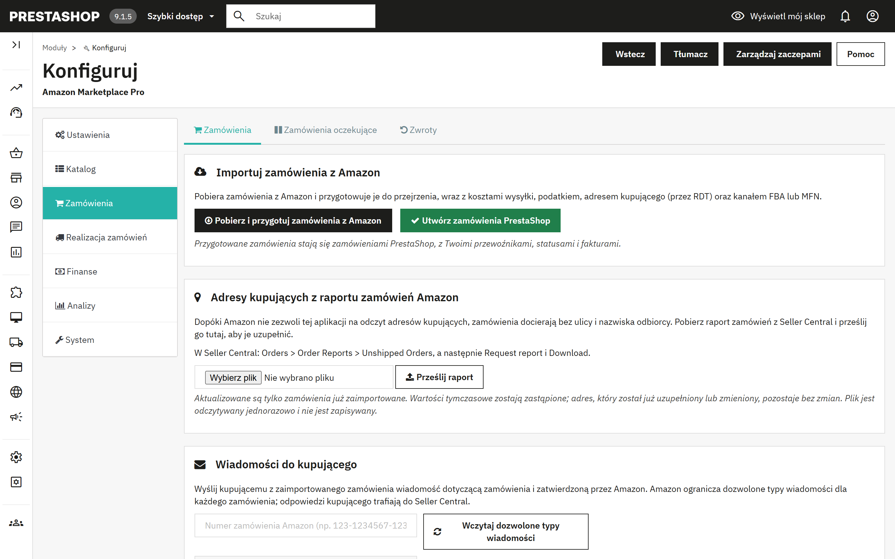
Import przebiega w dwóch krokach, tak jak w katalogu, więc możesz wszystko obejrzeć, zanim cokolwiek zostanie utworzone.
Zaplanowane zadania Import zamówień i Tworzenie zamówień PrestaShop wykonują te same dwa kroki automatycznie, domyślnie co 15 minut. Gdy zamówienie zostanie oznaczone w PrestaShop jako Wysłane, a hook z sekcji 4.3 jest włączony, moduł potwierdza wysyłkę w Amazon z numerem śledzenia i przypisanym kodem przewoźnika.
Odczyt imienia i nazwiska, adresu oraz numeru telefonu kupującego bezpośrednio z Amazon będzie dostępny wkrótce. Na razie, aby je uzyskać, pobierz raport zamówień z Seller Central i prześlij go do modułu. Dopóki tego nie zrobisz, zamówienie pokazuje klienta jako „Amazon Buyer”, a ulicę jako „Amazon Marketplace Order”.
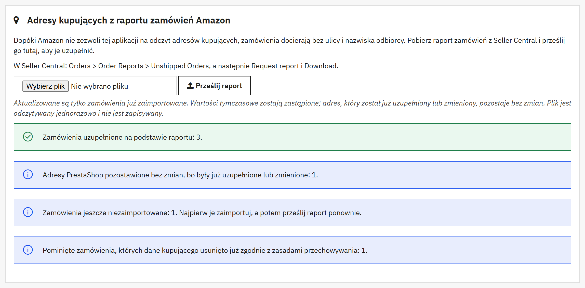
Wynik podaje, ile zamówień uzupełniono, ile miało już pełny adres, ile adresów PrestaShop pozostawiono bez zmian, ile zamówień nie zostało jeszcze zaimportowanych i ile pominięto, ponieważ dane kupującego zostały już usunięte. Przesyłanie działa według tych zasad:
Ponowne przesłanie tego samego raportu niczego nie psuje: każde zamówienie zostanie wtedy zgłoszone jako już kompletne. Dane uzupełnione z raportu są usuwane razem z pozostałymi danymi kupującego po okresie przechowywania (sekcja 12).
Zamówienia oczekujące zawierają zamówienia z Amazon, które nie mogły stać się zamówieniami PrestaShop z powodu braku stanu na produkcie. Uzupełnij stan i ponownie kliknij Utwórz zamówienia PrestaShop, wymuś utworzenie zamówienia przyciskiem Utwórz mimo to albo je usuń.
Zarezerwowany stan (zdalny koszyk) pokazuje sztuki wstrzymane dla zakupów w Amazon, które nie są jeszcze płatne. Amazon pokazuje trwający zakup jako zamówienie w stanie „Pending”; przy włączonym zdalnym koszyku (4.5) moduł od razu zdejmuje te sztuki ze stanu PrestaShop, aby żaden inny kanał nie mógł ich sprzedać, przekazuje je, gdy zamówienie stanie się płatne, i zwraca je po okresie karencji, jeśli tak się nie stanie. Rozliczaniem rezerwacji zajmuje się zadanie Rozliczanie zdalnych koszyków.
Importuj zwroty z Amazon pobiera zwroty i anulowania; Przetwórz oczekujące zwroty tworzy odpowiednio potwierdzenia zwrotu w PrestaShop lub anuluje zamówienia PrestaShop. Tabela Historia zwrotów pokazuje każdą pozycję z typem, kwotą zwrotu, zamówieniem PrestaShop i potwierdzeniem zwrotu. Zadania Import zwrotów i Przetwarzanie zwrotów automatyzują oba kroki.
Wpisz numer zamówienia Amazon i kliknij Wczytaj dozwolone typy wiadomości; Amazon ogranicza dozwolone typy wiadomości dla każdego zamówienia. Napisz wiadomość i wyślij ją albo kliknij Poproś o opinię, aby wysłać standardową prośbę Amazon o opinię, dozwoloną raz na zamówienie, od 5 do 30 dni po dostawie. Odpowiedzi przychodzą e-mailem i można je zapisywać w Obsłudze klienta dzięki ustawieniom Wiadomości (4.6).
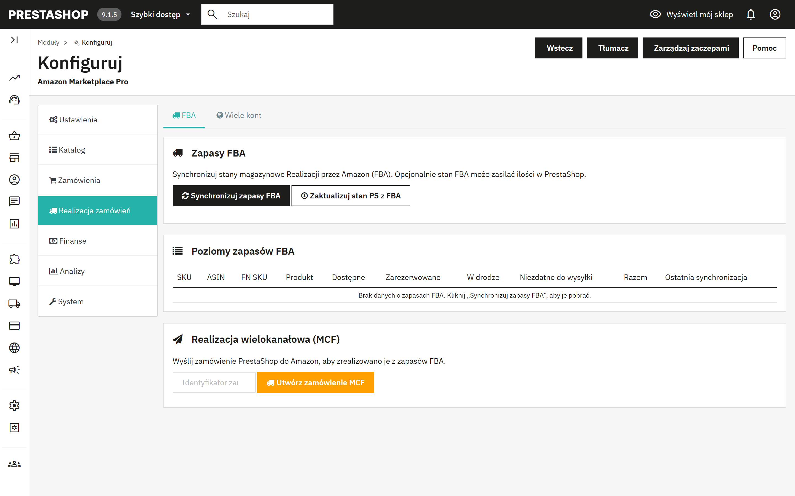
Synchronizuj zapasy FBA pobiera stan, który Amazon przechowuje dla Ciebie: dostępne, zarezerwowane, w drodze i niezdatne do wysyłki, dla każdego SKU. Zaktualizuj stan PS z FBA zapisuje dostępną ilość w PrestaShop, co przydaje się sprzedawcom, których towar znajduje się w magazynach Amazon. Zadanie Synchronizacja zapasów FBA domyślnie pobiera dane co godzinę.
Wpisz identyfikator zamówienia PrestaShop i kliknij Utwórz zamówienie MCF, aby Amazon wysłał zamówienie PrestaShop z Twoich zapasów FBA.
Dodaj kolejne marketplace'y Amazon, każdy z własnym lub głównym identyfikatorem sprzedawcy, i dla każdego wybierz, czy synchronizować zamówienia, produkty i stany. Obsługują je zadania Import zamówień, wszystkie marketplace'y i Synchronizacja produktów, wszystkie marketplace'y. Główny marketplace z Ustawień jest zawsze aktywny.
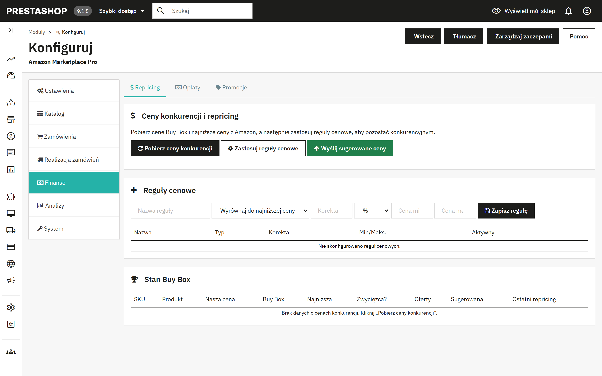
Trzy przyciski, w tej kolejności: Pobierz ceny konkurencji pobiera cenę Buy Box, najniższą cenę i liczbę ofert dla każdej Twojej oferty; Zastosuj reguły cenowe wylicza sugerowaną cenę dla każdego SKU; Wyślij sugerowane ceny wysyła te, które zatwierdzisz. Tabela Stan Buy Box pokazuje Twoją cenę na tle rynku i to, czy masz Buy Box.
Reguła cenowa ma typ (wyrównaj do najniższej ceny lub zejdź poniżej niej, wyrównaj do Buy Box lub zejdź poniżej Buy Box, albo stała marża), korektę procentową lub kwotową oraz cenę minimalną i maksymalną jako zabezpieczenie. Zadanie Cykl repricingu cyklicznie pobiera ceny i stosuje reguły; wysyłanie cen pozostaje ręczne, chyba że włączysz je w tym zadaniu.
Pobierz opłaty zamówień pobiera z API Finances Amazon prowizje od sprzedaży, opłaty FBA i inne prowizje dla każdego zamówienia, dzięki czemu widać rzeczywistą marżę każdej sprzedaży. Podsumowanie grupuje je według typu opłaty. Zadanie Pobieranie opłat domyślnie działa co sześć godzin.
Importuj promocje zastosowane w zamówieniach Amazon, eksportuj reguły koszyka PrestaShop w celu śledzenia albo twórz reguły koszyka PrestaShop z promocji Amazon. Tabela historii pokazuje każdą promocję wraz z jej kierunkiem.
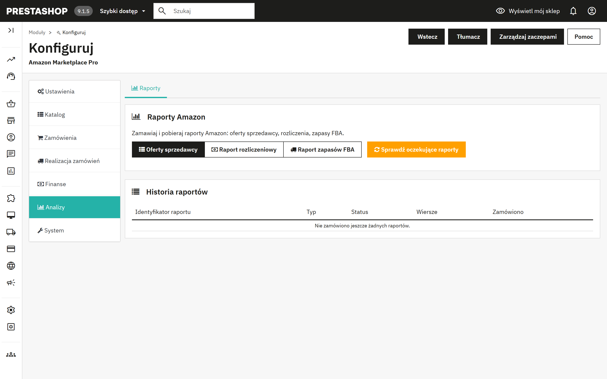
Zamawiaj raporty Amazon: Oferty sprzedawcy, Raport rozliczeniowy lub Raport zapasów FBA. Amazon przygotowuje raporty w tle; Sprawdź oczekujące raporty wyszukuje gotowe raporty i je pobiera, a tabela historii pokazuje status i liczbę wierszy. Zadanie Sprawdzanie raportów domyślnie sprawdza je co 30 minut.
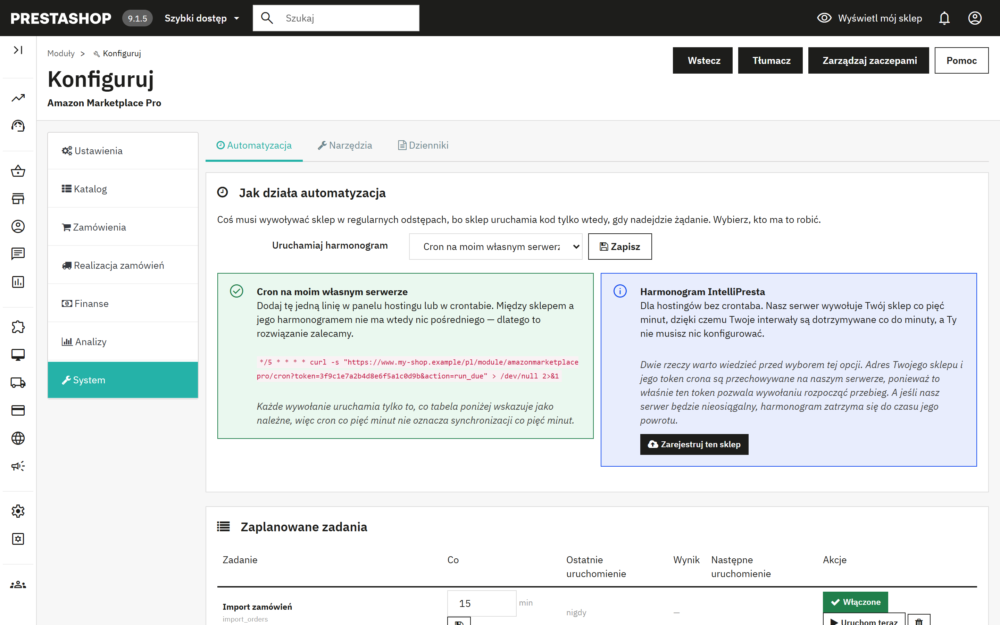
Sklep uruchamia kod tylko wtedy, gdy nadejdzie żądanie, więc coś musi go wywoływać w regularnych odstępach. Wybierz, kto ma to robić:
| Tryb | Jak to działa | Wybierz, gdy |
|---|---|---|
| Cron na moim własnym serwerze (domyślny, zalecany) | Dodaj wyświetloną linię w panelu hostingu lub w crontabie. Wywołuje ona sklep co pięć minut; każde wywołanie uruchamia tylko zadania, na które przyszła pora. Między sklepem a jego harmonogramem nie ma nic pośredniego. | Twój hosting ma crontab lub funkcję zaplanowanych zadań, jak większość hostingów. |
| Harmonogram IntelliPresta | Wybierz go, zapisz, a następnie kliknij Zarejestruj ten sklep. Serwer IntelliPresta wywołuje Twój sklep co pięć minut, więc interwały są dotrzymywane dokładnie, bez żadnej konfiguracji. Adres Twojego sklepu i token crona są przechowywane na tym serwerze; jeśli będzie nieosiągalny, harmonogram zatrzyma się do czasu jego powrotu. Przestań korzystać z harmonogramu usuwa rejestrację. | Twój hosting nie ma crontaba albo wolisz go nie utrzymywać. Sklep musi być dostępny przez HTTPS. |
Linia crona ma taką postać; moduł pokazuje Twoją linię z właściwym adresem i tokenem:
*/5 * * * * curl -s "https://www.your-shop.example/module/amazonmarketplacepro/cron?token=YOUR-TOKEN&action=run_due" > /dev/null 2>&1
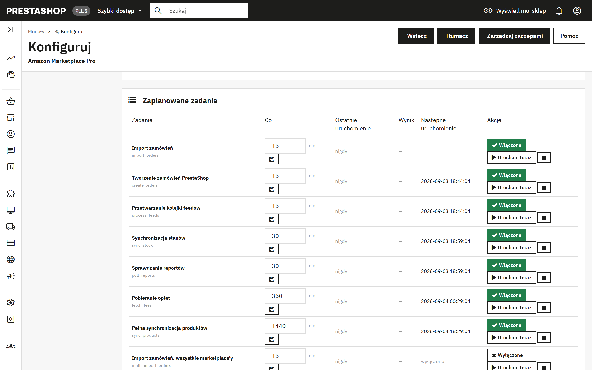
Każdy wiersz to jedno zadanie z interwałem w minutach, informacją, kiedy ostatnio działało i z jakim wynikiem, oraz kiedy uruchomi się następnym razem. Włączone/Wyłączone przełącza zadanie, Uruchom teraz wykonuje je natychmiast, a ikona kosza je usuwa. Usunięte zadania można dodać ponownie formularzem pod tabelą. W nowych instalacjach wszystkie zadania są obecne i wyłączone, więc nic nie działa, dopóki nie zdecydujesz inaczej.
| Zadanie | Domyślnie | Co robi |
|---|---|---|
| Import zamówień | 15 min | Pobiera i przygotowuje zamówienia z Amazon z okna wstecz (7.1, krok 1). |
| Tworzenie zamówień PrestaShop | 15 min | Zamienia przygotowane zamówienia w zamówienia PrestaShop (7.1, krok 2). |
| Synchronizacja stanów | 30 min | Wysyła bieżące ilości, a także ceny, jeśli obejmuje je tryb synchronizacji, dla produktów z okna zmian. |
| Pełna synchronizacja produktów | codziennie | Odczytuje katalog PrestaShop, porównuje go z Amazon i wysyła oczekujące oferty (5.1, kroki 1 i 3). |
| Przetwarzanie kolejki feedów | 15 min | Wysyła zmiany ofert z kolejki jako feedy i zapisuje wyniki z Amazon. |
| Import zwrotów / Przetwarzanie zwrotów | 60 min | Pobierają zwroty i anulowania, a następnie tworzą potwierdzenia zwrotu lub anulują zamówienia (7.4). |
| Synchronizacja zapasów FBA | 60 min | Pobiera stany magazynowe przechowywane przez Amazon (sekcja 8). |
| Cykl repricingu | 60 min | Pobiera ceny konkurencji i stosuje Twoje reguły (sekcja 9). |
| Pobieranie opłat | 6 h | Zapisuje opłaty Amazon dla każdego zamówienia. |
| Sprawdzanie raportów | 30 min | Pobiera gotowe raporty (sekcja 10). |
| Synchronizacja promocji | 6 h | Importuje promocje z zamówień. |
| Import zamówień / Synchronizacja produktów, wszystkie marketplace'y | 15 min / codziennie | Wersje importu zamówień i synchronizacji produktów dla wielu marketplace'ów. |
| Prośby o opinię | codziennie | Wysyła prośby o opinię dla dostarczonych zamówień, jeśli włączono je w sekcji 4.5. |
| Rozliczanie zdalnych koszyków | 15 min | Przekazuje lub zwalnia zarezerwowany towar (7.3). |
| Pobieranie wiadomości kupujących | 60 min | Przenosi odpowiedzi kupujących ze skrzynki do Obsługi klienta (4.6). |
| Przesyłanie faktur | 6 h | Przesyła faktury VAT sprzedawców zapisanych do VCS. |
| Usuwanie danych kupujących po okresie przechowywania | codziennie | Usuwa dane osobowe kupujących z zamówień starszych niż okres przechowywania (sekcja 12). |
Kontrola katalogu. Amazon dopasowuje wszystko po referencji i kodzie kreskowym. Produktów, którym brakuje któregokolwiek z nich lub które dzielą referencję z innym produktem, nie da się wystawić ani powiązać z przychodzącymi zamówieniami. Sprawdź mój katalog wyświetla ich listę.
Edytor referencji i kodów kreskowych. Wyeksportuj wszystkie produkty i kombinacje do pliku CSV, popraw referencje i kody kreskowe w arkuszu, a następnie wgraj plik z powrotem. Zapisywane są tylko referencja, EAN, UPC i referencja dostawcy. Ta operacja zmienia bezpośrednio Twój katalog PrestaShop i nie da się jej cofnąć; najpierw wykonaj kopię zapasową i zrób to przed publikacją, inaczej utworzysz zduplikowane SKU w Amazon.
Usuń oferty z Amazon. Znajduje oferty produktów, których już nie sprzedajesz, czyli skasowanych, wyłączonych albo odznaczonych dla Amazon, i pozwala przejrzeć listę przed usunięciem zaznaczonych. Usunięcie kasuje ofertę wraz z jej historią w Amazon i jest nieodwracalne. Aby tylko tymczasowo wstrzymać sprzedaż, publikuj zamiast tego ilość 0 (4.2).
Zawartość wysłanych feedów. Dokładny JSON wysłany do Amazon dla każdego feedu, do pobrania według identyfikatora feedu. Wsparcie Amazon poprosi o niego, gdy oferta zostanie odrzucona z powodu, którego raport nie wyjaśnia.
Ostatnie 50 wpisów dziennika aktywności modułu, z datą, poziomem, źródłem i komunikatem. Błędy są wyróżnione. To pierwsze miejsce, które warto sprawdzić, gdy zaplanowane zadanie pokazuje „Niepowodzenie”.
Gdy PrestaShop obsługuje więcej niż jeden sklep, moduł działa dla każdego sklepu osobno. Wybierz sklep z listy wyboru sklepu u góry panelu administracyjnego, a następnie otwórz moduł; jego strona pokazuje nazwę sklepu pod tytułem.
| Obszar | Przy kilku sklepach |
|---|---|
| Połączenie z Amazon | Każdy sklep łączy się z własnym kontem sprzedawcy Amazon przyciskiem Połącz z Amazon. Konto sprzedawcy może być połączone tylko z jednym sklepem dla tego samego marketplace'u, więc dwa sklepy nigdy nie importują tych samych zamówień. |
| Zamówienia, produkty, stany magazynowe i ceny | Każdy sklep importuje własne zamówienia z Amazon i tworzy je w tym sklepie, a wysyła tylko własne produkty, stany magazynowe i ceny. |
| Automatyzacja | Każdy sklep ma własny harmonogram, własną linię crona i własny token (11.1). Dodaj jedną linię crona dla każdego sklepu albo zarejestruj każdy sklep w harmonogramie IntelliPresta. |
| Profile, mapowania kategorii, szablony wysyłki, reguły cenowe i reguły produktów | Wspólne dla wszystkich sklepów. Sklep może zapisać własną wersję, która dotyczy tylko tego sklepu. W widoku sklepu elementy wspólne dla wszystkich sklepów są oznaczone jako Wszystkie sklepy. |
| Usuwanie danych kupującego | Działa dla każdego sklepu, a każdy sklep ma własny okres przechowywania (sekcja 12). |
Polityka ochrony danych Amazon wymaga usunięcia danych kupującego w ciągu 30 dni od dostawy. Gdy opcja Usuwanie danych kupującego jest włączona (to ustawienie domyślne), moduł czyści z własnej tabeli zamówień imię i nazwisko, e-mail, ulicę, miasto, region, kod pocztowy i telefon kupującego oraz zapisane dane z Amazon, gdy tylko zamówienie jest zakończone i starsze niż ustawiony okres przechowywania. Kwoty zamówienia, podatki, opłaty i kraj docelowy pozostają, więc raporty i ewidencja VAT nie ulegają zmianie. Ustawienia zamówień pokazują, ile zamówień czeka na wyczyszczenie, i oferują przycisk Wyczyść teraz; zadanie Usuwanie danych kupujących po okresie przechowywania robi to codziennie.
Wyłączenie usuwania oznacza przechowywanie danych kupujących z Amazon dłużej, niż Amazon na to pozwala. Zrób to tylko wtedy, gdy wymaga tego obowiązek prawny, który potrafisz wskazać.
Opcja Anonimizuj także klienta i adres w PrestaShop jest celowo domyślnie wyłączona. PrestaShop tworzy faktury na podstawie zapisanego adresu, więc jego anonimizacja zmienia dokumenty, które prawo może nakazywać przechowywać w nienaruszonej postaci, a faktura, którą musisz zachować, to dokładnie wyjątek dopuszczony przez politykę Amazon. Gdy opcja jest włączona, klient jest anonimizowany tylko wtedy, gdy wszystkie jego zamówienia są już wyczyszczonymi zamówieniami Amazon; miasto, kod pocztowy i kraj pozostają, aby rozliczenie VAT dało się uzasadnić.
Unijne rozporządzenie w sprawie ogólnego bezpieczeństwa produktów (GPSR) wymaga podania w ofertach kontaktu do osoby odpowiedzialnej. Ustaw go dla produktu (sekcja 6) albo dla producenta lub dostawcy (5.5) i wybierz, który z tych dwóch kontaktów ma pierwszeństwo. Kontakt musi być już zarejestrowany w Seller Central w Account Health > Product Policy Compliance. Kraj pochodzenia ustawia się dla producenta.
Importowane zamówienia mogą używać kwot podatku podanych przez Amazon albo Twoich własnych reguł podatkowych (4.5). Sprzedawcy zapisani do VAT Calculation Service Amazon mogą automatycznie przesyłać swoje faktury PrestaShop.
Wynik pojawia się pod zielonym banerem w Ustawienia > Połączenie. Gdy sprawdzanie się nie powiedzie, szczegóły techniczne są też zapisywane w zakładce Dzienniki (11.4); pomoc techniczna o nie poprosi.
| Wynik | Znaczenie i co zrobić |
|---|---|
| „Wszystko działa: moduł ma dostęp do Twojego konta Amazon.” | Połączenie działa. Jeśli synchronizacja nadal się nie udaje, przyczynę znajdziesz w zakładce Dzienniki. |
| „Amazon odmówił dostępu do Twojego konta sprzedawcy.” | Samo połączenie jest w porządku, ale Amazon nie udostępnia danych tego sprzedawcy. Sprawdź w Seller Central, czy konto jest aktywne i korzysta z planu Profesjonalnego. Jeśli tak, kliknij Odłącz, a następnie ponownie Połącz z Amazon. |
| „Amazon nie akceptuje już tego połączenia.” | Połączenie zostało usunięte w Seller Central. Kliknij Odłącz, a następnie ponownie Połącz z Amazon. |
| „Nie udało się połączyć z Amazon ani z usługą połączenia IntelliPresta.” | Zwykle to przejściowy problem z siecią. Spróbuj ponownie za kilka minut; jeśli problem się powtarza, skontaktuj się z pomocą techniczną. |
| „Ten serwer nie może nawiązać bezpiecznego połączenia z Amazon.” | Certyfikaty bezpieczeństwa na serwerze są nieaktualne. Poproś dostawcę hostingu o ich aktualizację. |
| Objaw | Przyczyna i rozwiązanie |
|---|---|
| „Nie znaleziono produktów z referencją (SKU)” po kliknięciu Synchronizuj PS do Amazon | Produkty nie mają referencji w polu wybranym jako źródło SKU (4.2). Uzupełnij je lub użyj Edytora referencji i kodów kreskowych (11.3). |
| Wysyłka zaakceptowana, ale do Amazon trafiła tylko oferta, bez danych produktu | Kategoria produktu nie ma ani profilu, ani mapowania kategorii albo opcja „Wysyłaj pełne dane produktu” jest ustawiona na Nie (4.3). |
| Oferta odrzucona z błędem brakującego atrybutu | Amazon ustala pola wymagane dynamicznie. Otwórz profil, znajdź atrybut na liście opcjonalnej, wypełnij go, zapisz i wyślij ponownie. Zawartość feedu (11.3) pokazuje dokładnie, co zostało wysłane. |
| Importowane zamówienia pokazują 0 % VAT | Wybierz „Stosuj moje reguły podatkowe PrestaShop” w sekcji 4.5. |
| Zaplanowane zadanie pokazuje „Niepowodzenie” | Komunikat w tabeli i zakładka Dzienniki podają przyczynę. Po usunięciu problemu kliknij Uruchom teraz, aby spróbować ponownie. Po powtarzających się niepowodzeniach kliknij Sprawdź połączenie (4.1). |
| Nic się nie uruchamia, choć zadania są włączone | Żaden cron nie wywołuje sklepu. Sprawdź, czy linia crona istnieje w panelu hostingu albo czy sklep jest zarejestrowany w harmonogramie IntelliPresta i dostępny przez HTTPS. |
| Odbite e-maile do kupujących z Amazon | Adresy przekierowujące Amazon wygasają. Włącz zanonimizowany adres e-mail (4.5). |
Napisz na adres support@intellipresta.com. Podaj wersję modułu, wersję PrestaShop, odpowiednie wiersze z zakładki Dzienniki, a przy problemach z ofertami identyfikator feedu lub SKU. Odpowiadamy w ciągu jednego dnia roboczego.
| SKU | Twój własny identyfikator produktu w Amazon. Moduł tworzy go z pola PrestaShop, zwykle z referencji. |
| ASIN | Identyfikator strony katalogowej w Amazon. Ten sam ASIN może oferować kilku sprzedawców. |
| EAN / UPC / GTIN | Kody kreskowe produktów. Amazon używa ich do dopasowania Twojego produktu do istniejącej strony. |
| Pełna oferta a sama oferta | Pełna oferta (listing) to strona katalogowa z tytułem, opisem i zdjęciami. Sama oferta (offer) to Twoja cena i stan na tej stronie. |
| Typ produktu | Schemat kategorii Amazon (SHIRT, FASHION_RING), który określa, jakie atrybuty musi zawierać oferta. |
| Profil | Zapisane w module odpowiedzi dla jednego typu produktu, powiązane z kategoriami PrestaShop. |
| Feed | Dokument zbiorczy wysyłany do Amazon i przetwarzany w tle. Używany przy wysyłkach powyżej 25 SKU. |
| MFN / AFN / FBA | Merchant Fulfilled Network: wysyłasz Ty. Amazon Fulfilled Network, czyli Fulfillment by Amazon: Amazon wysyła ze swoich magazynów. |
| MCF | Multi-Channel Fulfilment (realizacja wielokanałowa): Amazon wysyła z Twoich zapasów FBA zamówienie z innego kanału, np. z Twojego własnego sklepu. |
| Buy Box | Domyślna oferta wyświetlana na stronie produktu w Amazon. Repricing ma na celu jej zdobycie lub utrzymanie. |
| RDT | Restricted Data Token: mechanizm, przez który Amazon udostępnia sklepowi adresy kupujących, każdorazowo na jedno wywołanie. |
| GPSR | Unijne rozporządzenie w sprawie ogólnego bezpieczeństwa produktów (General Product Safety Regulation), które wymaga podania w ofertach kontaktu do osoby odpowiedzialnej. |
| VCS | VAT Calculation Service Amazon; zapisani do tej usługi sprzedawcy przesyłają własne faktury VAT. |
| Okno zmian | Okres, w którym produkt musiał się zmienić, aby został uwzględniony w wysyłce. |
| Zdalny koszyk | Trwający zakup w Amazon, widoczny jako zamówienie w stanie Pending, dla którego moduł może zarezerwować towar. |
Amazon Marketplace Pro jest rozwijany i utrzymywany przez IntelliPresta i nie jest wspierany przez Amazon ani PrestaShop, ani z nimi powiązany. Amazon jest znakiem towarowym Amazon.com, Inc. lub podmiotów powiązanych. PrestaShop jest znakiem towarowym PrestaShop SA.